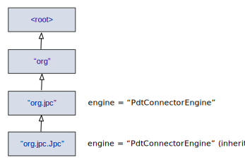
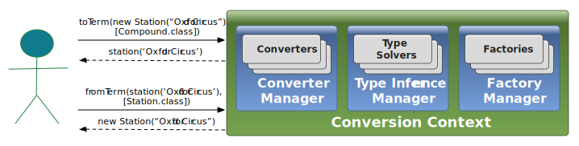

<!doctype html>
<html>
<head>
<meta charset="UTF-8">
<title>JPC User Guide</title>

	<link rel="stylesheet" href="/styles/publication/sc.tutorial.css" />
	<link rel="stylesheet" href="/styles/publication/sc.tooglejs.css" />

	<script type="text/javascript" src="/js/jquery.min.js" charset="utf-8"></script>
	<script type="text/javascript" src="/js/ace-builds/src-noconflict/ace.js" charset="utf-8"></script>
    <script type="text/javascript" src="/js/publication/jquery.tableofcontents.min.js" charset="utf-8"></script>
	<script type="text/javascript" src="/js/publication/jquery.sc.publication.js" charset="utf-8"></script>
    
    <script type="text/javascript">//<![CDATA[
  (function ($) {
    $(document).ready(function(){
		
      $('#table_of_content_entries').tableOfContents('#content', {startLevel:2, depth: 3});
      $.prettifyCodeSnippets("eclipse");
      //$.prettifyCodeSnippets("solarized_light");
      $.configureFootnotes();

    })

  })(jQuery);


//]]></script>


<script type="text/javascript">

  var _gaq = _gaq || [];
  _gaq.push(['_setAccount', 'UA-47515052-1']);
  _gaq.push(['_trackPageview']);

  (function() {
    var ga = document.createElement('script'); ga.type = 'text/javascript'; ga.async = true;
    ga.src = ('https:' == document.location.protocol ? 'https://ssl' : 'http://www') + '.google-analytics.com/ga.js';
    var s = document.getElementsByTagName('script')[0]; s.parentNode.insertBefore(ga, s);
  })();

</script>

</head>


<body>


<h1>JPC User Guide</h1>

<div id="table_of_content">
  <strong>Contents</strong>
  <ol id="table_of_content_entries"></ol>
</div>


<div id="content">

<h2>Introduction</h2> 

<p>
JPC is a Java-Prolog interoperability library providing different layers of integration abstractions.
This guide presents the different JPC features supporting the integration of Java-Prolog systems, assuming a general understanding of the <a href="architecture.html" title="JPC architecture">JPC architecture</a>.
</p>

<p>
You will notice that JPC often provides more than one mechanism to accomplish certain tasks.
Typically, a simple straightforward way that is good enough for many small problems, and more sophisticated alternatives that may be more appropriate for complex requirements.
If you are reading this guide for first time, it may be a good idea to start with the simpler alternatives (always presented first) and leave the more complex options for later.
</p>

<p>
In order to download and try the examples discussed here, please refer to the <a href="installation_guide.html#installingJpcExamples" title="JPC Installation guide">JPC installation guide</a>.
</p>


<h2>Creating Prolog Engines</h2> 

<p>
JPC provides an abstraction of a Prolog engine that can interoperate with concrete Prolog engines by means of drivers.
This section describes how to instantiate such engines.
</p>

<h3>Explicit Instantiation</h3> 

<p>
The easiest way to instantiate a Prolog engine is by explicitly referencing a JPC driver.
For example, to instantiate a JPC engine using the <a href="installation_guide.html#pdtDriver" title="PDT-based driver">PDT-based driver</a> we could write:
</p>

<div class="codeEditor"><pre data-editor="java" data-show-gutter="true">
PrologEngine engine = new PdtConnectorDriver().createPrologEngine();
</pre></div>


<p>
This approach, although straightforward and good enough for many scenarios, causes a strong coupling between an application and a concrete driver.
An alternative is presented below.
</p>


<h3>Categorized Prolog Engines</h3> 

<p>
Several techniques and conventions presented in this section are inspired on <a href="http://logging.apache.org/log4j/1.2/" title="Apache log4j">Apache log4j</a>, a well-known logging library.	
</p>

<p>
JPC allows to easily categorize an <q>engine space</q> (i.e., the space of all possible Prolog engines) according to some developer-chosen criteria.
This approach allows to decouple a Java program from concrete engine implementations and provides fine grained control on the Prolog engines that should be used to accomplish a given task.
</p>

<p>
Using this technique, engines are categorized hierarchically following a naming rule. 
In this hierarchy, a name <code>"org.jpc"</code> is said to be the ancestor of the name <code>"org.jpc.Jpc"</code>.
An engine categorized by means of a name will be inherited, unless overridden, by any of its name descendants.
This categorization is illustrated by the figure below.
</p>

<div class="divImg">
  
  <div id="imglabel:jpc_named_hierarchy" >Fig 1. - A named categorization for engines.</div>
</div>

<p>
An engine space can be defined either programmatically or by means of a settings file.
The latter is the JPC recommended approach.
</p>

<p>
A JPC configuration can be represented (e.g., in a settings file) as a <a href="http://json.org/" title="JSON">JSON</a> object.
One of the attributes of this configuration object is <code>engines</code>, a list of engine configurations.
The following JPC configuration specifies a Logtalk compatible Prolog engine categorized under the name <code>"org.jpc"</code>.
</p>

<div class="codeEditor"><pre data-editor="json" data-show-gutter="true">
{
	"engines": [
	  {
	    "id": "pdt",
	    "categoryNames": ["org.jpc"],
	    "factoryClass": "org.jpc.engine.pdtconnector.PdtConnectorDriver",
	    "profile": "org.jpc.engine.profile.LogtalkEngineProfile"
	  }
	]
}</pre></div>


<p>
Each engine configuration has the following attributes:
</p>

<div class="divList">
<ul>
	<li><code>id</code>: The identifier of this engine configuration. This attribute is optional if the <code>categoryNames</code> attribute is specified.</li>
	<li><code>categoryNames</code>: A list of category names to which this engine configuration applies. This attribute is optional if the <code>id</code> attribute is specified.</li>
	<li><code>factoryClass</code>: A <a href="http://en.wikipedia.org/wiki/Factory_pattern" title="Factory pattern">factory</a> of Prolog engines (usually a JPC driver) associated to this engine configuration.</li>
	<li><code>factoryMethod</code>: A (static or instance) method in the factory class that creates a Prolog engine. If no specified, the factory class should implement the <a href="/javadocs/org/jpc/engine/prolog/driver/PrologEngineFactory.html" title="PrologEngineFactory class"><code>PrologEngineFactory</code></a> interface. This attribute is optional.</li>
	<li><code>profile</code>: A <a href="http://en.wikipedia.org/wiki/Decorator_pattern" title="Decorator pattern">decorator</a> that may configure the Prolog engine the first time it is instantiated. It must be a class implementing the <a href="/javadocs/org/jpc/engine/profile/PrologEngineProfile.html" title="PrologEngineProfile class"><code>PrologEngineProfile</code></a> interface. This attribute is optional.</li>
</ul>
</div>

<p>
Although Prolog engines can be categorized by means of any name, the JPC convention is to categorize them according to the fully qualified name of the class or package where they are used.
Therefore, an engine categorized for the <code>org.jpc</code> package will be used in the <code>org.jpc.Jpc</code> class unless overridden (i.e., if another engine has been categorized for the name <code>"org.jpc.Jpc"</code>).
Then, to obtain a Prolog engine in an arbitrary class, you need to write:
</p>

<div class="codeEditor"><pre data-editor="java" data-show-gutter="true">
import static org.jpc.engine.prolog.PrologEngines.getPrologEngine;
...
getPrologEngine(getClass().getCanonicalName()); //returns a Prolog engine categorized for this class fully qualified name.
//or just:
getPrologEngine(getClass());</pre></div>

<p>
Alternatively, a Prolog engine may be instantiated by means of the <code>id</code> of an engine configuration, like: 
</p>

<div class="codeEditor"><pre data-editor="java" data-show-gutter="true">
import static org.jpc.engine.prolog.PrologEngines.getPrologEngineById;
...
getPrologEngineById("pdt");</pre></div>

<p>
The engines obtained in the previous examples are instantiated from the default settings file <code>jpc.settings</code> in the root package.
Alternatively, engines can be instantiated from an arbitrary settings file as in this example:
</p>

<div class="codeEditor"><pre data-editor="java" data-show-gutter="true">
import org.jpc.util.config.EngineConfigurationManager;
...
EngineConfigurationManager.createFromFile(&lt;file_name&gt;).getPrologEngine(getClass());</pre></div>


<h2 id="conversionAPI">The Conversion API</h2> 

<p>
JPC provides an API, inspired by <a href="https://code.google.com/p/google-gson/" title="Google's Gson">Google's Gson</a>, for converting between Java Objects into their Prolog term representation and back.
This conversion API can work with any kind of objects, including those whose source code is not available.
It provides constructs for:
</p>

<div class="divList">
<ul>
	<li>Defining (bidirectional) Java-Prolog conversion functions (<a href="#implementingConverters" title="JPC converters">converters</a>).</li>
	<li>Inferring the best target type of a conversion operation (<a href="#implementingTypeSolvers" title="JPC type solvers">type solvers</a>).</li>
	<li>(Optionally) instantiating conversion target types (<a href="#implementingFactories" title="JPC factories">factories</a>).</li>
</ul>
</div>

<p>
Several examples in this section and in the rest of this tutorial refer to the <a href="/london_underground.html" title="London underground example">London underground case study</a>.
</p>


<h3 id="conversionContext">The JPC Context</h3> 

<p>
Our primary library class is a conversion context, modelled by the <a href="/javadocs/org/jpc/Jpc.html" title="Jpc class"><code>Jpc</code></a> class.
This context encapsulates a bidirectional conversion strategy for a set of Java objects and Prolog terms.
A context is configured in term of converters, type solvers, factories and other conversion artefacts.
Figure 2 illustrates its main components.
</p>

<div class="divImg">
  
  <div id="imglabel:jpc_context" >Fig 2. - The JPC Context.</div>
</div>

<p>
In order to facilitate the configuration of a <a href="/javadocs/org/jpc/Jpc.html" title="Jpc class"><code>Jpc</code></a> instance, there is also a <a href="/javadocs/org/jpc/JpcBuilder.html" title="JpcBuilder class"><code>JpcBuilder</code></a> class with a straightforward fluent API for configuring its properties. This configuration involves the registration of custom conversion artefacts (e.g., <a href="#implementingConverters" title="Converters">converters</a>, <a href="#implementingTypeSolvers" title="Type solvers">type solvers</a> and <a href="#implementingFactories" title="Factories">factories</a>).
The example below shows how to configure a builder to create a <a href="/javadocs/org/jpc/Jpc.html" title="Jpc class"><code>Jpc</code></a> context that knows how to convert objects from the <a href="/london_underground.html" title="London underground example"><code>London underground case study</code></a>.
</p>


<p><pre id="metroCustomConverter" data-editor="java" data-show-gutter="true">
public static final Jpc jpc = JpcBuilder.create()
    .register(new MetroConverter())
    .register(new LineConverter())
    .register(new StationConverter()).build();</pre></p>

<p>
In addition, JPC is bundled with a predefined catalog of converters that support a considerable number of common conversions. This minimises the amount of code to be written when defining new conversions.
</p>


<h3 id="implementingConverters">Implementing Converters</h3> 

<p>
JPC provides two interfaces for defining conversions from Java to Prolog (<a href="/javadocs/org/jpc/converter/ToTermConverter.html" title="ToTermConverter class"><code>ToTermConverter</code></a>) and vice versa (<a href="/javadocs/org/jpc/converter/FromTermConverter.html" title="FromTermConverter class"><code>FromTermConverter</code></a>).
The <a href="jpc.examples/javadocs/org/jpc/examples/metro/model/hlapi/converters/StationConverter.html" title="StationConverter class"><code>StationConverter</code></a> class in the code below implements both interfaces. It implements a method defining the conversion of <a href="jpc.examples/javadocs/org/jpc/examples/metro/model/Station.html" title="Station class"><code>Station</code></a> instances to (lines 6-8) and from (lines 10-13) a Prolog compound term.
</p>


<div class="codeEditor"><pre data-editor="java" data-show-gutter="true">
public class StationConverter implements 
		ToTermConverter&lt;Station, Compound&gt;, 
		FromTermConverter&lt;Compound, Station&gt;  {
	public static final String STATION_FUNCTOR = &quot;station&quot;;

	@Override public Compound toTerm(Station station, Class&lt;Compound&gt; termClass, Jpc context) {
		return new Compound(STATION_FUNCTOR, asList(new Atom(station.getName())));
	}

	@Override public Station fromTerm(Compound term, Type type, Jpc context) {
		String stationName = ((Atom)term.arg(1)).getName();
		return new StationJpc(stationName);
	}
}</pre></div>


<h3 id="implementingTypeSolvers">Implementing Type Solvers</h3> 

<p>
When no type information is provided in a conversion, JPC attempts to infer the best target type based on the actual source object to convert.
For example, a Prolog list term with a certain structure may be reified, by convention, as a map in Java.
Type solvers provide a mechanism for telling JPC what is the best target type in a conversion operation.
The code below shows an extract of a type solver.
Note that type solvers implements the <a href="/javadocs/org/jpc/converter/typeSolver/TypeSolver.html" title="TypeSolver class"><code>TypeSolver</code></a> interface.
In this example, the type solver returns a <a href="http://docs.oracle.com/javase/7/docs/api/java/util/Map.html" title="Map class"><code>Map</code></a> class on line 12 if it can conclude that the term looks like a map.
If it is unable to assign a type to the term it signals it throwing a <a href="/javadocs/org/jpc/converter/typeSolver/UnrecognizedObjectException.html" title="UnrecognizedObjectException class"><code>UnrecognizedObjectException</code></a> exception (line 14).
</p>


<div class="codeEditor"><pre data-editor="java" data-show-gutter="true">
public class MapTypeSolver implements TypeSolver&lt;Compound&gt; {
	@Override public Type getType(Compound term) {
		if(term.isList()) {
			ListTerm list = term.asList();
			Predicate&lt;Term&gt; isMapEntry = new Predicate&lt;Term&gt;() {
				@Override
				public boolean apply(Term term) {
					return isMapEntry(term);
				}
			};
			if(!list.isEmpty() &amp;&amp; Iterables.all(list, isMapEntry))
				return Map.class;
		}
		throw new UnrecognizedObjectException();
	}

	private boolean isMapEntry(Term term) {
		...
	}
}</pre></div>


<h3 id="implementingFactories">Implementing Factories</h3> 

<p>
If a converter does not know how to instantiate a conversion target type (e.g., it is abstract), it can ask the <a href="/javadocs/org/jpc/Jpc.html" title="Jpc class"><code>Jpc</code></a> context for an instance of such type.
For example, in the type solver implementation above a type solver may identify the type of a Prolog list with a certain structure  as a <a href="http://docs.oracle.com/javase/7/docs/api/java/util/Map.html" title="Map class"><code>Map</code></a>. But the type solver does not provide any mechanism to instantiate such an interface, since its only responsibility is to give a hint on the appropriate conversion type.
Assuming that a registered factory can instantiate Java maps, a converter only needs to invoke the <a href="http://jconverter.github.io/javadocs/org/jconverter/JConverter.html#instantiate(java.lang.reflect.Type)" title="JConverter.instantiate(Type) method"><code>instantiate(Type)</code></a> in a <a href="/javadocs/org/jpc/Jpc.html" title="Jpc class"><code>Jpc</code></a> context to obtain an instance of the desired type.
An example of this factory is showed below.
</p>


<div class="codeEditor"><pre data-editor="java" data-show-gutter="true">
public class MapFactory implements Factory&lt;Map&lt;?,?&gt;&gt;() {
	@Override
	public Map&lt;?,?&gt; instantiate(Type type) {
		return new HashMap&lt;&gt;();
	}
}</pre></div>


<h3 id="primitivesConversions">Primitives Conversions</h3> 

<p>
In this section we illustrate how to convert between Java and Prolog primitives. In order to facilitate the discussion, we also include in this section conversions of the Java <a href="http://docs.oracle.com/javase/7/docs/api/java/lang/String.html" title="String class"><code>String</code></a> class, since it is the natural equivalent of the <a href="/javadocs/org/jpc/term/Atom.html" title="Atom class"><code>Atom</code></a> primitive Prolog type.
</p>

<p>
The simplest way to use our library is by means of the <a href="/javadocs/org/jpc/Jpc.html#toTerm(java.lang.Object)" title="Jpc.toTerm(Term) method"><code>toTerm(Term)</code></a> and <a href="/javadocs/org/jpc/Jpc.html#fromTerm(org.jpc.term.Term)" title="Jpc.fromTerm(Term) method"><code>fromTerm(Term)</code></a> methods in the <a href="/javadocs/org/jpc/Jpc.html" title="Jpc class"><code>Jpc</code></a> class <a href="#implementingConverters" title="Conversion methods">introduced before</a>.
Below there is a list of successful assertions that illustrates some pre-defined conversions of Java types to Prolog terms. 
</p>

<div class="codeEditor"><pre data-editor="java" data-show-gutter="true">
assertEquals(new Atom("true"),   jpc.toTerm(true));   //Boolean to Atom
assertEquals(new Atom("c"),      jpc.toTerm('c'));    //Character to Atom
assertEquals(new Atom("1"),      jpc.toTerm("1"));    //String to Atom
assertEquals(new IntegerTerm(1), jpc.toTerm(1));      //Integer to IntegerTerm
assertEquals(new FloatTerm(1),   jpc.toTerm(1D));     //Double to FloatTerm</pre></div>

<p>
Pre-defined conversions of Prolog terms to Java types are shown below.
</p>

<div class="codeEditor"><pre data-editor="java" data-show-gutter="true">
assertEquals(true, jpc.fromTerm(new Atom("true")));   //Atom to Boolean
assertEquals("c",  jpc.fromTerm(new Atom("c")));      //Atom to String
assertEquals("1",  jpc.fromTerm(new Atom("1")));      //Atom to String
assertEquals(1L,   jpc.fromTerm(new IntegerTerm(1))); //IntegerTerm to Long
assertEquals(1D,   jpc.fromTerm(new FloatTerm(1)));   //FloatTerm to Double</pre></div>


<h3 id="typedConversions">Typed Conversions</h3> 

<p>
The <a href="/javadocs/org/jpc/Jpc.html" title="Jpc class"><code>Jpc</code></a> class conversion methods can receive as a second parameter the expected type of the converted object.
Some examples of Java-Prolog conversions that specify the expected Prolog term type are shown below.
In line 1, the <a href="http://docs.oracle.com/javase/7/docs/api/java/lang/Integer.html" title="Integer class"><code>Integer</code></a> 1 is converted to an <a href="/javadocs/org/jpc/term/Atom.html" title="Atom class"><code>Atom</code></a> instead of an <a href="/javadocs/org/jpc/term/IntegerTerm.html" title="IntegerTerm class"><code>IntegerTerm</code></a>. This is because we specify the <a href="/javadocs/org/jpc/term/Atom.html" title="Atom class"><code>Atom</code></a> class as the target conversion type.
In line 2, the string <code>"1"</code> is converted to an <a href="/javadocs/org/jpc/term/IntegerTerm.html" title="IntegerTerm class"><code>IntegerTerm</code></a>. 
</p>

<div class="codeEditor"><pre data-editor="java" data-show-gutter="true">assertEquals(new Atom("1"), jpc.toTerm(1, Atom.class));               //Integer to Atom
assertEquals(new IntegerTerm(1), jpc.toTerm("1", IntegerTerm.class)); //String to IntegerTerm</pre></div>

<p>
Below there are examples of Prolog-Java conversions that specify the expected Java type.
</p>
	
<div class="codeEditor"><pre data-editor="java" data-show-gutter="true">
assertEquals(1, jpc.fromTerm(new Atom("1"), Integer.class));         //Atom to Integer
assertEquals("1", jpc.fromTerm(new IntegerTerm(1), String.class));   //IntegerTerm to String
assertEquals("true", jpc.fromTerm(new Atom("true"), String.class));  //Atom to String
assertEquals('c', jpc.fromTerm(new Atom("c"), Character.class));     //Atom to Character</pre></div>


<h3 id="multiValuedConversions">Multi-Valued Conversions</h3> 

<p>
The default Jpc catalog of converters also provides conversions for multi-valued data types such as arrays, collections, and maps. Below there is an example showing a conversion of an array object with a string and an integer element: <code>{"apple", 10}</code>.
Its result is a Prolog term list having as elements an atom and an integer term: <code>[apple, 10]</code>.
Alternatively, we could have used a list instead of an array. We would have obtained exactly the same result by replacing line 1 by:
<code>Term term = jpc.toTerm(asList("apple", 10));</code> 
</p>

<div class="codeEditor"><pre data-editor="java" data-show-gutter="true">
Term term = jpc.toTerm(new Object[]{"apple", 10});
assertEquals(
new Compound(".", asList(new Atom("apple"),  // equivalent to .(apple, .(10, []))
	new Compound(".", asList(new IntegerTerm(10), 
	new Atom("[]"))))), 
term);</pre></div>		

<p>
A slightly more complex example is illustrated below. First, a Java map is instantiated (lines 1-6).
The default term conversion is applied on line 7, generating a Prolog list with two key-value pairs: <code>[apple:10, orange:20]</code>. This result is tested on lines 9-10.
</p>
	
<div class="codeEditor"><pre data-editor="java" data-show-gutter="true">
Map&lt;String, Integer&gt; 
map = new LinkedHashMap&lt;String, Integer&gt;() {{
// LinkedHashMap preserves insertion order
	put("apple", 10);
	put("orange", 20);
}};
Term term = jpc.toTerm(map);
List&lt;Term&gt; listTerm = term.asList();  // converts a Prolog list term to a list of terms
assertEquals(new Compound(":", asList(new Atom("apple"), new IntegerTerm(10))), listTerm.get(0));
assertEquals(new Compound(":", asList(new Atom("orange"), new IntegerTerm(20))), listTerm.get(1));</pre></div>
	

<h3 id="genericTypesSupport">Generic Types Support</h3> 

<p>
JPC provides extensive support for generic types. 
Consider the example below.
A Prolog list term is created on line 1. We use the <a href="https://code.google.com/p/guava-libraries/wiki/ReflectionExplained" title="TypeToken class"><code>TypeToken</code></a> class (from Google's <a href="https://code.google.com/p/guava-libraries/" title="Google's Guava library"><code>Guava library</code></a>) to obtain an instance of the parameterised type <code>List&lt;String&gt;</code> (line 2).
Then we give this type as a hint to the converter (line 3) and we verify on lines 4 and 5 that the elements of the Java <a href="http://docs.oracle.com/javase/7/docs/api/java/util/List.html" title="List class"><code>List</code></a>
are indeed instances of <a href="http://docs.oracle.com/javase/7/docs/api/java/lang/String.html" title="String class"><code>String</code></a>, as it was specified on line 3.
</p>
	
<div class="codeEditor"><pre data-editor="java" data-show-gutter="true">
Term listTerm = listTerm(new Atom("1"), new Atom("2"));
Type type = new TypeToken&lt;List&lt;String&gt;&gt;(){}.getType();
List&lt;String&gt; list = jpc.fromTerm(listTerm, type);
assertEquals("1", list.get(0));
assertEquals("2", list.get(1));</pre></div>

<p>
In the previous example, the type passed to the converter was redundant, since elements in the Prolog list are atoms, which are converted by default to <a href="http://docs.oracle.com/javase/7/docs/api/java/lang/String.html" title="String class"><code>String</code></a> instances in Java. 
Consider, however, the example below. The main change w.r.t. the previous example is that the type we send as a hint is now <code>List&lt;Integer&gt;</code> (line 3).
This instructs the converter to instantiate a list where all its elements are integers, as demonstrated on lines 4 and 5.
</p>

<div class="codeEditor"><pre data-editor="java" data-show-gutter="true">Map<String, Integer> 
Term listTerm = listTerm(new Atom("1"), new Atom("2"));
Type type = new TypeToken&lt;List&lt;Integer&gt;&gt;(){}.getType();
List&lt;Integer&gt; list = jpc.fromTerm(listTerm, type); 
assertEquals(1, list.get(0));
assertEquals(2, list.get(1));</pre></div>	


<h3 id="typeInferenceExample">Inference of Conversion Target Types</h3> 

<p>
<a href="#implementingTypeSolvers" title="Implementing type solvers"><code>Before</code></a> we showed the implementation of a default type solver responsible of determining if the best conversion type of a term is an instance of <a href="http://docs.oracle.com/javase/7/docs/api/java/util/Map.html" title="Map class"><code>Map</code></a>.
Below we show a conversion example that relies on such type solver. On line 3 we create a list term from two previously created compound terms.
We convert it to a Java map on line 4 and test its values on lines 5 and 6.
As expected, our library infers that the best Java type of the term should be a <a href="http://docs.oracle.com/javase/7/docs/api/java/util/Map.html" title="Map class"><code>Map</code></a>.
This is because the type solver finds that all the elements in the Prolog list (<code>[apple-10, orange,20]</code>) are compounds with an arity of 2 and with functor <code>'-'</code>, which are mapped by default to map entries (i.e., instances of the <a href="http://docs.oracle.com/javase/7/docs/api/java/util/Map.Entry.html" title="Map.Entry class"><code>Map.Entry</code></a> class).
</p>


<div class="codeEditor"><pre data-editor="java" data-show-gutter="true">
Compound c1 = new Compound("-", asList(new Atom("apple"), new IntegerTerm(10)));
Compound c2 = new Compound("-", asList(new Atom("orange"), new IntegerTerm(20)));
Term listTerm = listTerm(c1, c2); // creates a list term from a list of terms
Map map = jpc.fromTerm(listTerm);
assertEquals(10L, map.get("apple"));
assertEquals(20L, map.get("orange"));</pre></div>
	
<p>
Alternatively, line 4 could be replaced by <code>List list = jpc.fromTerm(listTerm, List.class);</code> This type hint explicitly given by the programmer has higher priority that the one inferred by the type solver. 
In this case, the result would therefore be a list of map entries since the Prolog list would be converted to a Java list (i.e., an instance of a class implementing <a href="http://docs.oracle.com/javase/7/docs/api/java/util/List.html" title="List class"><code>List</code></a>), but the default conversion of each term in the list (a compound with arity 2 and functor <code>'-'</code>) would still be a map entry object.
</p>

<p>
Note that JPC leaves to the programmer the responsibility of providing enough information (i.e., a target type) in case where ambiguities are possible. 
For example, the previous type solver may answer false negatives if it cannot conclude something from the structure of members in the list (i.e., the list term is empty).
If the programmer always specify the intended conversion type the possible ambiguity disappears.
</p>

<h3 id="customConversions">Custom Conversions</h3> 


<a href="#conversionContext" title="List class"><code>List</code></a>

<p>
The previous examples employed only predefined converters.
Assuming the custom conversion context defined <a href="#metroCustomConverter" title="Undeground example custom converter"><code>before</code></a>, we revisit the \lstinline{Station} class shown in listing \ref{lst:stationJpl}.
Listing \ref{lst:stationJpc} shows a new implementation of such class.
Using our library, the \lstinline{connected(Line)} method was reduced from 14 to 7 lines of code.
In addition, the methods \lstinline{asTerm()} and \lstinline{create(Term)} are not in the \lstinline{Station} class anymore since they have been encapsulated into a converter class.
Note that terms are easily created according to a conversion context. In line 5, the last argument of the compound is an instance of \lstinline{Line}. The conversion of this object to a term is done automatically by our framework. Conversely, in listing \ref{lst:stationJpl} (line 17), we were forced to invoke an explicit conversion when we requested the term representation of the line object.
The same applies in line 6, where the \lstinline{Station} instance denoted by the \lstinline{this} keyword is automatically transformed to its term representation.
</p>

<p>
A \lstinline{Query} object is instantiated on line 7 from an object abstracting a Prolog engine. %(as briefly discussed in section \ref{architecture}). 
Note that this object may (optionally) receive a context.
The advantage of making a query instance aware of a conversion context becomes clear on line 8.
To better understand this, recall from section \ref{prologVMAbstraction} that a Prolog solution is represented as a map binding variable names to terms. On line 8, the invocation of the \lstinline{selectObject(String)} method encapsulates the original query in an adapter, where each solution of this query adapter is an object whose term representation is given in the argument of \lstinline{selectObject}, taking into account the bindings of any variables in the solution.
In our example, the solution object is expressed as the Prolog variable \lstinline{Station}, which has been bound to a term representing an instance of \lstinline{Station}. The conversion of this term to a \lstinline{Station} object is transparently accomplished by our library.
</p>

<div class="codeEditor"><pre data-editor="java" data-show-gutter="true">
public class Station {
	...
	public Station connected(Line line) {
		String stationVarName = "Station";
		Term message = jpcContext.compound("connected", asList(new Var(stationVarName), line));
		Term objectMessage = jpcContext.compound("::", asList(this, message));
		Query query = getPrologEngine().query(objectMessage, jpcContext);
		return query.&lt;Station&gt;selectObject(stationVarName).oneSolution();
	}
}</pre></div>

<p>
The previous example makes use of a deterministic query. % by means of the \lstinline{oneSolution()} method. 
The \lstinline{Query} class (and query adapters) interface also supports non-deterministic queries (i.e., backtracking over solutions).
Internally, this relies on the concrete implementation of the chosen JPC driver. As already mentioned in section \ref{prologVMAbstraction}, this discussion has been left out of the scope of this work.
</p>


<h3 id="termQuantifiedConverterExample">Term-Quantified Converters</h3> 

In section \ref{termQuantifiedConverters} we discussed that the domain of Prolog to Java artefact converters is, in some cases, better quantified using terms.
Listing \ref{lst:helloWorldConverter} shows a straightforward implementation of the \lstinline{HelloConverter} mentioned in that section: it returns a Java \lstinline{String} containing the name of the compound to convert, a white space, and the compound first argument (line 3).

<div class="codeEditor"><pre data-editor="java" data-show-gutter="true">
class HelloConverter implements FromTermConverter&lt;Compound, String&gt; {
	@Override public String fromTerm(Compound term, Type targetType, Jpc context) {
		return ((Atom)term.getName()).getName() + " " + ((Atom)term.arg(1)).getName();
	}
}</pre></div>

<p>
Listing \ref{lst:termQuantifiedConverter} shows a concrete example of the registration and usage of this converter.
In line 3, we make use of the \lstinline{JpcBuilder} class to register the \lstinline{HelloConverter} converter.
Note that we pass both an instance of the converter and the term quantifying its domain (\lstinline{hello(_)}).
This is internally translated to an assert in the embedded JPC Prolog database, where the \lstinline{HelloConverter} converter is associated to a domain term with functor \lstinline{hello/1}.
In line 6 we verify that the result of converting the compound term \lstinline{hello(world)} is the Java \lstinline{String} ``\lstinline{hello world}'', as specified by the domain quantified converter.
</p>

<div class="codeEditor"><pre data-editor="java" data-show-gutter="true">
JpcBuilder builder = JpcBuilder.create();
Compound helloCompound = new Compound("hello",  asList(Var.ANONYMOUS_VAR));
builder.register(new HelloConverter(), helloCompound);
Jpc jpc = builder.build();
Compound helloWorldCompound = new Compound("hello",  asList(new Atom("world")));
assertEquals("hello world", jpc.fromTerm(helloWorldCompound));</pre></div>


<h2 id="lowLevelAPI">The Querying API</h2> 


<h3 id="lowLevelAPI">The Low-Level Querying API</h3> 

<p>
All the JPC methods that deal explicitly with Prolog terms are part of the low-level API.
</p>


<h3 id="highLevelAPI">The High-Level Querying API</h3> 

<p>
Methods that abstract from the term representation of arbitrary Java objects are part of the JPC high-level API.
</p>

<h2>Exception Management</h2> 


<h2>Reference Management</h2> 


</div> <!-- end of content -->

    

</body>
</html>
